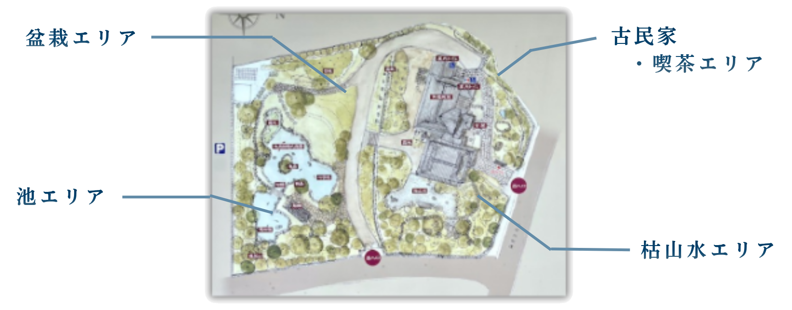
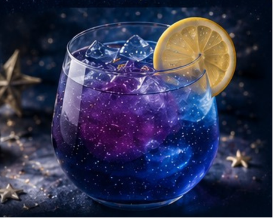
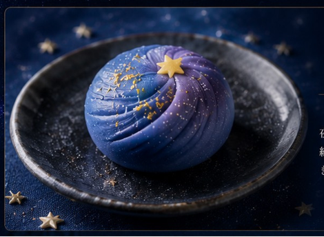
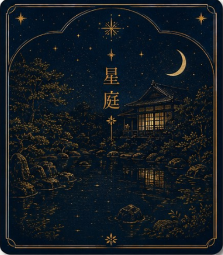
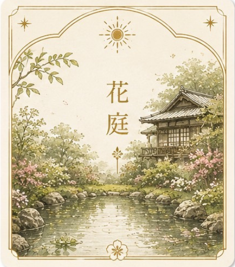

枯山水を月面に見立てた
演出
枯山水エリア
- 枯山水の新たな鑑賞価値の創出
- 日本庭園の「見立て」文化の体験
ABOUT THE EVENT
高尾駒木野庭園を舞台に、夜の庭をゆっくり歩く特別な2日間。光と音、香りと味覚が重なり合う、ここだけの夜旅へお越しください。
GARDEN MAP
高尾駒木野庭園で、星ふる夜の旅をお楽しみください。

PROGRAM
IMMERSIVE LIGHT-UP
枯山水エリア
池エリア
NIGHT CAFE “HOSHIZORA”
夜の庭を歩いたあとは、あたたかな灯りの喫茶「星庭」へ。詳細なメニューは専用ページでご案内します。

DRINK
DESSERTGARDEN CARD
入園時、入園料と引き換えに全員に配布。全6種からランダムで、庭園のおすすめスポットをカードにします。

星庭カードを提示した来園者へ、先着100名限定で配布します。

WORKSHOP
夜の庭で感じたものを、自由な模様と色で一枚の作品に。素材に触れ、手を動かしながら、自分だけの星空をつくります。
ACCESS
〒193-0844 東京都八王子市裏高尾町268-1
高尾山口駅から徒歩約15分・高尾駅から徒歩約20分